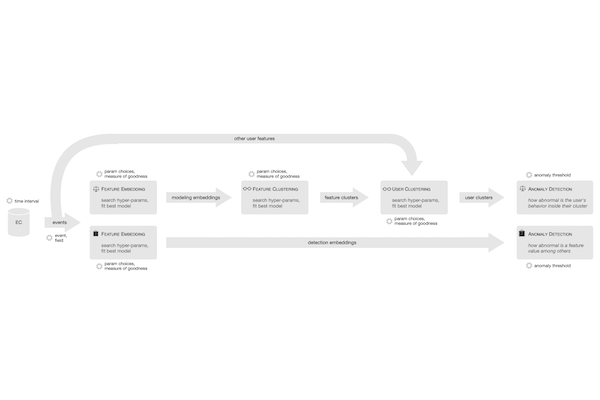
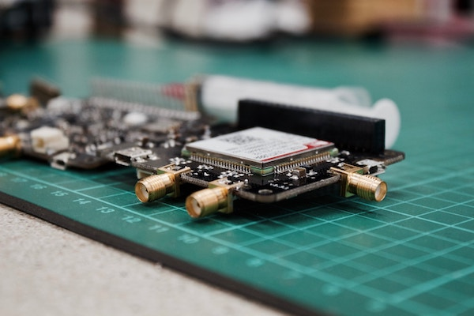

Swearing and social media likes

On Twitter, women swear less, but swearing while it's raining, on a Saturday can improve audience engagement. We also predict which and where a swear word would impact engagement the most; and counterfactually explore celebrity scenarios.
Authors
Time
Institution
Links
Patterns of Life tool

Aggregate multiple sources of data to generate a filterable population density estimation to prevent civilian casualties. Sponsored by the US Air Force and prototyped using the Lean startup methodology, focused on customer discovery.
Transformer vs CNN encoders in RL

Especially in non-euclidian topologies, and settings with non-local interactions, transformer state preprocessors can perform better than Convolutional ones, due to their "global" perceptive field and permutation invariance.
Learning to hack

In game-theoretic model of an enterprise network penetration scenario, older Genetic Algorithm methods trade speed for robustness, compared to modern Reinforcement Learning techniques.
Detecting abnormal user behavior
Behavior anomalies, indicative of a compromised endpoint, are detected by processing raw system events using stages of clustering, and other unsupervized learning techniques, sensitive to the time-based sequentiality of the events.
E-commerce recommender engine
Product recommender for platforms having up to tens of thousands of products and customers, with up to daily updates of purchase behavior. Collaborative Filtering, SVD and online updates.
Work done while at Adobe
Photo credits: Blake Wisz
Finding features that drive retention

Select which features of a software product make keep users coming back using an array of statistical and learning methods, and a meta-classifier aggregating multiple heterogenous models.
Biological cues for Game Flow

Games strive to be challenging — neither boring nor frustrating. Physiological (heart-rate, skin temperature, etc) and emotional (through facial expressions) signals can be used to adapt a game's difficulty in response to the user.
Data Visualization workshop

Python basics and the Jupyter environment; data wrangling using Numpy and Pandas; Data Visualization principles, best practices and case studies, illustrated using Matplotlib and Seaborn.
Formal methods lab

Various types of Finite Automata and exercises involving them and Formal Languages. Diagrams and step-by-step solutions to help students understand both the intuition and the implementation details, in C++.
Functional programming lab

Explanations and exercises for Declarative Programming concepts, taught in Haskell. Supplemental lab materials, for the students to reference during class or at home.
Self-driving model car

What happens when you end up with an extra part when you're "done"? You redo weeks of assembling and hope it doesn't happen again. What do you do when you end up with a different extra part afterwards? Just hope it wasn't essential.
Smart Vim tutor

Popularize the notorious Vim text editor. Tutorials gradually introduce and allow the practice of concepts, gamification aids motivation and smart hints subtly show how you could have done actions more efficiently.
Combining DQN extensions

Putting together modern DQN techniques that target various aspects of the RL process. Benchmarked on a 2D environment from OpenAI's Gym.
Abstract Machine

Syntactic parser for a custom grammar, with inspectable Abstract Syntax Tree, and evaluator for custom semantics offering step-by-step evaluation, for the program given as input.
Steganography demo

An area of cryptography, stegano, deals with hiding information in plain sight: from tattooing a secret on a messenger's scalp and letting the hair grow, to the kerning of letters, or encoding an image into the least significant bits of another.
Image completion

Pure signal processing (no learning) method for inpainting — filling missing areas of an image through texture synthesis. Used for object removal, photo restoration, picture expansion.
Evolving a network to flap

Browser implementation of a flappy-bird-like game, neural network and Genetic Algorithm optimizer that uses selection, mutation and crossover to breed the fittest (reaching highest score) genomes.
Multiplayer tank game

"Fire Tracks!" is an online game in which you face off against three other tanks and chase, shoot each-other and make use of your special abilities in a bright, cartoony mayhem.
Parallel training for Neural Networks

C++ implementation of feedforward network and optimizer, with MPI parallelism on CPU. Demo on handwritten digit classification, with an interactive front-end for drawing the digit yourself.
Information Retrieval explainer

Textual search engine that highlighting why certain documents and terms were selected, featuring stemming, stop-word removal and accented letters conversion.
Adventures of the modern man

Survive as long as you can by juggling your attention between working out (hitting the green spot), making money (move wallet left-right), hit the balls (move foot up-down) and maintaining the correct speed (press pedal).
IoT performance dashboard
Visualize various performance metrics for Internet of Things devices and spike-detection algorithm to prevent running in a hazardous state.